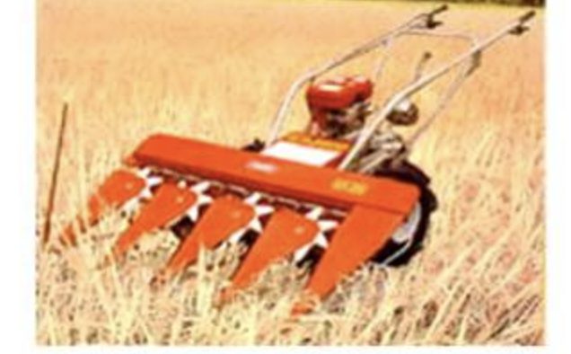
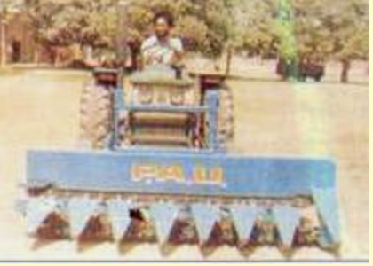
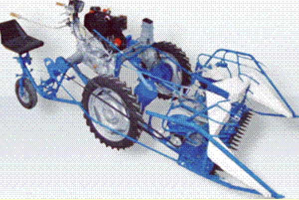
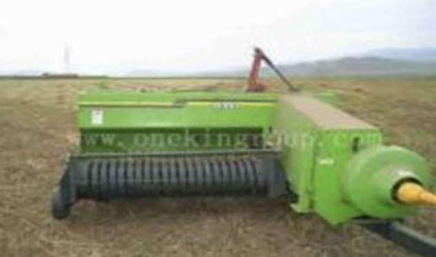
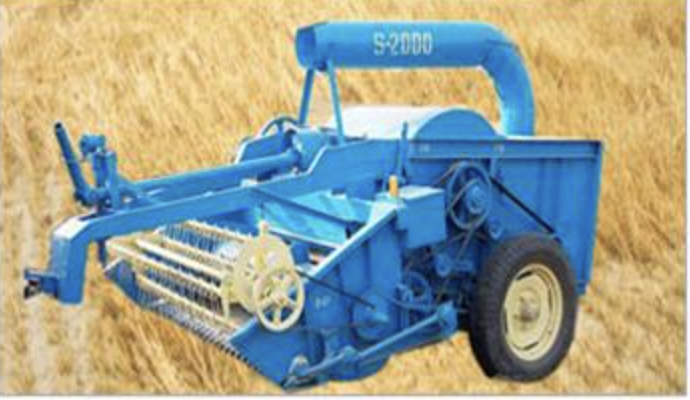

8.0 HARVESTING EQUIPMENT
- 8.1. Self-Propelled Riding Type Vertical Conveyor Reaper
- 8.2 TRACTOR MOUNTED VERTICAL CONVEYOR REAPER
- 8.3 SELF-PROPELLED COMBINE HARVESTER
- 8.4. Self-propelled Combine Harvester for Maize
- 8.5 Self-Propelled Reaper Binder
- 8.6 Straw Baler
- 8.7 Straw Reaper/Straw Combine
- 8.8 Potato digger-elevator
8.1 SELF-PROPELLED RIDING TYPE VERTICAL CONVEYOR REAPER
Features
It is an engine operated, walk behind type harvester suitable for harvesting and windrowing cereals and oilseed crops. The reaper consists of engine, power transmission box, pneumatic wheels, cutter bar, crop row dividers, conveyor belts with lugs, star wheels, operating controls and a sturdy frame. The engine power is transmitted to cutter bar and conveyor belts through belt pulleys. During forward motion of the reaper, crop row dividers divide the crop, which come in contact with cutter bar, where shearing of crop stems takes place. The cut crop is conveyed to one side of the machine by the conveyor belt fitted with lugs and is windrowed in the field. The crop is bundled manually and transported to threshing yard. There are no shattering losses due to vertical conveying of the crop
Specifications:
| Dimensions (LxWxH)( mm) | : 2450 x 1200 x 1000 |
| Weight (kg) | : 145 |
| Number of crop dividers | : 4 |
| Length of cutter bar (mm) | : 1000 |
| Cutter bar pitch (mm) | : 75 |
| Number of strokes/min | : 700 (0.8 m/s average speed) |
| Power requirement (hp/kW) | : 5/3.75, diesel engine |
Uses:
It is suitable for harvesting rice, wheat, soybean and other cereals and oilseeds. The main advantage of this reaper is that there are no shattering losses as it does not have reel. It drops the crop in windrow and hence, it can be collected easily.
Cost of Machine : Rs.80,000/-
8.2 TRACTOR MOUNTED VERTICAL CONVEYOR REAPER
Features
The machine consists of a 76 mm pitch reciprocating cutter bar assembly, seven crop row dividers, and two vertical conveyor belts fitted with lugs, pressure springs, pulleys and gearbox for the power transmission system. The crop row dividers are fitted in front of the cutter bar assembly and the star wheels are mounted over the crop row dividers. The machine is mounted in front of the tractor and the power to the machine is given from tractor PTO with the help of intermediate shaft running beneath the chassis of the tractor and a coupling shaft. Height of the machine above ground is controlled by tractor hydraulics with the help of pulleys and steel ropes. After the crop is cut by the cutter bar, it is held in a vertical position and crop is delivered to one side of the machine by lugged belt conveyors and fall on the ground in the form of a windrow perpendicular to the direction of movement of the machine.
Specifications:
| Number of star wheels | : 7 |
| Diameter of star wheel (mm) | : 270-282 |
| Effective cutter bar width (mm) | : 2000-2210 |
| Guard spacing (mm) | : 70-80 |
| Cutter bar stroke length (mm) | : 75-80 |
| Stroke per minute | : 388-675 |
| Size of belt conveyer (cm) | : 2-3 ply |
| Width of belt (mm) | : 55-60 |
| Diameter of conveyor pulley (mm) | : 118-140 |
| Cutter bar length (mm) | : 1600-2010 |
| Weight (kg) | : 197-350 |
| Power source (hp/kW) | : 35/26.5, tractor |
Uses:
Vertical conveyor reaper is used for harvesting and windrowing of wheat and paddy crops.
Cost of Machine : Rs.45,000/-
8.3 SELF-PROPELLED COMBINE HARVESTER

Features
The combine harvester consists of cutting unit, threshing unit and cleaning and grain handling units. The cutting section includes reel, cutter bar, an auger and a feeder conveyer. Threshing section has threshing cylinder, concave and cylinder beater. The cleaning section mainly consists of walker, chaffer sieve, grain collection pan. The grain handling section consists of a grain elevator and a discharge auger. The crop after being cut is delivered to the cylinder and concave assembly through feeder conveyor where it is threshed and the grains and straw is separated in different sections. The grain can be directly loaded into the trolley. These are being used in lower part of the Uttranchal.
Specifications:
| Cutter bar length (mm) | : 4300 |
| Cutting height (mm) | : 550-1250 |
| Threshing drum diameter (mm) | : 605 |
| Threshing drum length (mm) | : 1240 |
| Threshing drum speed (rpm) | : 540-1050 |
| Length of upper sieve (mm) | : 1240 |
| Width of upper sieve (mm) | : 1215 |
| Length of lower sieve (mm) | : 1240 |
| Width of lower sieve (mm) | : 1215 |
| Grain tank capacity (cubic meter) | : 3.28 |
| Road speeds (km/h) | : 2 -11.4 |
| Weight (kg) | : 8200 |
| Power Source (hp/kW) | : 90-110, tractor |
Uses:
Combines are used for cutting, threshing, cleaning of cereal and other crops in one operation.
Cost of Machine : Rs.14-16 lakh
8.4 SELF-PROPELLED COMBINE HARVESTER FOR MAIZE

Features
The combine harvester consists of a cutting unit, threshing unit and cleaning and grain handling units. The cutting section is specially designed to harvest maize crop and the header can be fitted to conventional grain combines. Threshing section has threshing cylinder, concave and cylinder beater. The cleaning section mainly consists of walker, chaffer sieve, grain collection pan. The grain handling section consists of a grain elevator and a discharge auger. The crop after being cut is delivered to the cylinder and concave assembly through feeder conveyor where it is threshed and the grains and straw is separated in different sections.
Specifications:
| Cutter Bar Width (mm) | : 3650 |
| Cutting Height (mm) | : 100- 1000 |
| No. of Rows | : 5/7 |
| Row Spacing (mm) | : 460- 685 |
| Size of threshing drum, Dia. x Length (mm) | : 600 x 1260 |
| Type of Threshing drum | : Rasp Bar |
| Speed of threshing drum (rpm) | : 535 to 1210rpm |
| Concave Clearance (mm) | : 3-16 |
| Number of Straw Walkers | : 5 |
| Area of straw walkers (m2) | : 0.89 |
| Cleaning area (m2) | : 25 |
| Overall Dimension (L x B) (mm) | : 1500 x 4500 |
| Min. Ground Clearance (mm) | : 460 |
| Weight (kg). | : 9000 |
| Working capacity (ha/h) | : 1.00 |
| Power requirement(hp/kW) | : 75-110 56-82, Engine |
Uses:
Maize Combine is used for cutting, threshing and cleaning of maize and can be used for harvesting other cereal crops in one operation by changing the header.
Cost: Rs.12-14 lakh
8.5 SELF- PROPELLED REAPER BINDER
Features
Reaper-Binder is a unique harvesting machine that reaps the crop as well as binds it simultaneously. This Innovative Mechanical machine ensures 100% recovery of straw with negligible grain losses at a surprisingly low cost of operation. This machine is mainly used in Wheat, Paddy, Oats, Barley and other grain crops.
Specifications:
| Width of Cut(m) | : 12 |
| Height of Cut(cm) | : 3 to 5 |
| Engine(hp/kW) | : 10.2 7.5, Air Cooled Diesel |
| Gear | : 4 Forward & 1 Reverse |
| Weight of Machine(kg) | : 400 |
Uses:
- Harvesting and Binding of Grain Crops in a single operation.
- Used for Grain crops of height up to 85 to 110 cm.
- Harvesting and Binding of 1 Acre of field in 1 Hour, with consumption of 1 Liter Diesel only.
- Cutter Bar for Harvesting Barseem, Mentha, Lucern, Paddy Stubbles and Other Fodder Crops can also be attached to the same machine.
Cost of Machine : Rs.2,00,000/-
8.6 STRAW BALER
Features
The tractor PTO operated machine consists of reel type straw pick up assembly, and straw compaction and tying units. It automatically picks up the residue straw from field with the help of reel which is transferred into bale chamber with the help of feeder and then straw is compressed with the reciprocating ram into a compact variable length size. It also automatically ties the knots using metal wire or nylon rope.
Specifications:
| Length (mm) | : 5550 |
| Width (mm) | : 2600 |
| Height (mm) | : 1950 |
| Width of pick up reel | : 1540 |
| Number of knotters | : 2 |
| Cross section of the bale chamber (mm) | : 400 x 460 |
| Twine box capacity | : Four spools |
| No. of plunger strokes per minute | : 75 at 2000 engine rpm |
| Plunger stroke length (mm) | : 764 |
| Wheel tread (mm) | : 2100 |
| Flywheel diameter (mm) | : 560 |
| Power Source (hp/kW) | : 35/26.5 or above tractor |
Uses:
Straw balers are used for baling of straw into bales of rectangular cross section.
Cost of Machine : Rs.5,00,000/-
8.7 STRAW REAPER/ STRAW COMBINE
Features
Straw combine operated by tractor PTO has cutter bar reel, feeding auger and bruising cylinder like a traditional thresher. Straw thrown and stubble left by the grain combine is collected by straw combine and delivered to the cylinder concave section, where it is cut into pieces and passed through the concave. A reciprocating cutter bar is used for reaping the standing stubbles and the portion of the straw left uncut by the combine harvester. Straw, which passes through the concave, is aspirated by a blower and fed into a trolley on rear side covered by a wire net. For recovering the left grains from the straw, a sieve system is provided below the concave
Specifications:
| Length (mm) | : 3370-5350 |
| Width (mm) | : 2145-2400 |
| Height (mm) | : 2210 |
| Length of cutter bar | : 1830 |
| Height of cut | : 60 |
| Diameter of reel (mm) | : 435-485 |
| Width of reel (mm) | : 1920-1935 |
| Width/Dia. of threshing drum (mm) | : 1025-1250/525-625 |
| Threshing drum speed (rpm) | : 650 |
| Blower diameter (mm) | : 660 |
| Blower width (mm) | : 230 |
| Number of blowers | : 1-2 |
| Machine capacity (ha/h) | : 0.40 |
| Power requirement (hp/kW) | : 35/26.25 or above, tractor |
Uses:
Straw combines are used to recover wheat straw left standing after combine operation. It also helps in recovering about 50 kg grain per hectare.
Cost of Machine : Rs.1,25,000/-
8.8 POTATO DIGGER ELEVATOR

Features
The tractor PTO operated potato digger elevator consists of a crescent/convex triangular shape-cutting blade, elevator rollers generally made of iron bars, power transmission device and a tractor hitching system. The crescent shape blade helps in digging of potatoes, which are carried to the shaking conveyor belt and are finally dropped at the rear of the machine in windrow form. These are then collected manually. The shaking of belt helps in removal of the soil from the potatoes. These machines can also be used for harvesting onions. In some models, discs are provide in the front to cut haulm or for guiding the blade along the rows.
Specifications:
| Length (mm) | : 2060 |
| Width (mm) | : 1195 |
| Height (mm) | : 1070 |
| Number of furrows | : 2 |
| Working width (mm) | : 1070 |
| Size of disc ( mm) | : 510 |
| Weight (kg) | : 500-525 |
| Power source (hp) | : 35 or above, tractor |
Uses:
Potato diggers are used for harvesting and exposing the potato tubers.